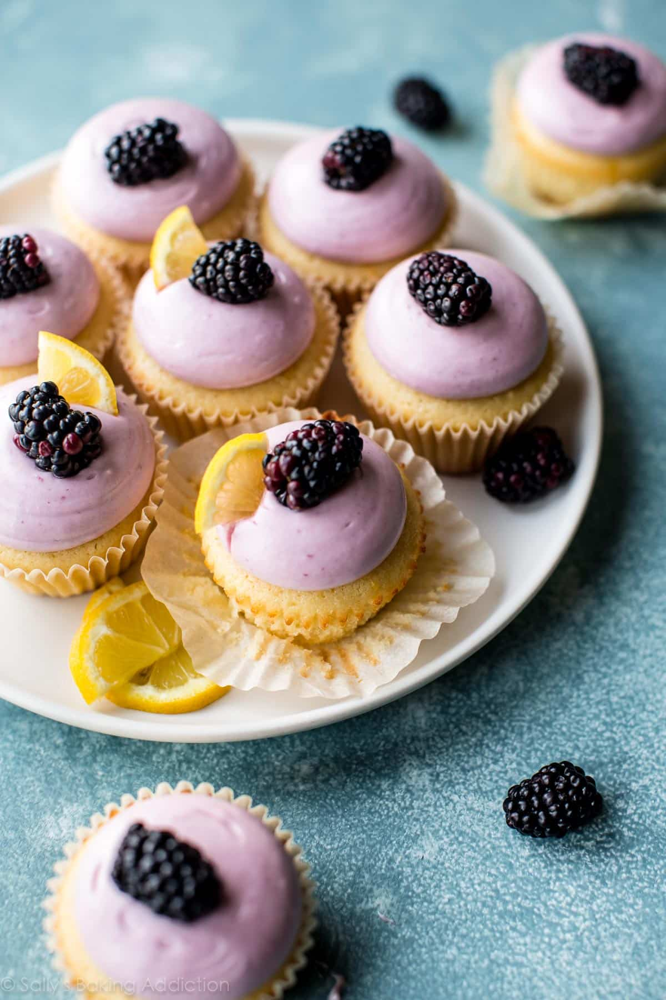

Lemon Cupcakes

Deliciously moist and flavorful lemon cupcake, topped with creamy rich raspberry frosting.
Ingredients:
- 1/2 cup (8 Tbsp; 113g) unsalted butter, softened to room temperature
- 1 cup (200g) granulated sugar
- 2 large eggs, room temperature
- 1 and 1/2 teaspoons pure vanilla extract
- 1 and 1/2 cups (188g) all-purpose flour (spooned & leveled)
- 2 teaspoons baking powder
- 1/2 teaspoon salt
- 1/2 cup (120ml) whole milk
- 1 and 1/2 Tablespoons lemon zest
- 1/3 cup (80ml) fresh lemon juice*
Steps:
- Preheat the oven to 350°F (177°C). Line 12-count muffin pan with paper liners. Set aside.
- Make the cupcakes: Using a handheld or stand mixer fitted with a paddle attachment, beat the butter and sugar together on medium-high speed in a large bowl until creamed. About 2-3 minutes. Scrape down the sides and bottom of the bowl as needed. Add eggs and vanilla. Beat on medium-high speed until everything is combined, about 2 full minutes. Scrape down the sides and bottom of the bowl as needed. Set aside.
- In a medium bowl, toss together the flour, baking powder, and salt. Slowly add the dry ingredients to the wet ingredients in 3 additions, beating on low speed after each addition. Batter will be thick. Beat in the milk, lemon zest, and lemon juice on low speed until just combined. Do not overmix this batter at any point. Spoon batter evenly into 12 cupcake liners. Bake for about 20 minutes. Check at 18 minutes, then again at 20. A toothpick inserted in the middle will come out clean when done. Remove from the oven and allow to cool completely before frosting.
- Make the frosting: Beat softened butter on medium speed for about 3-4 minutes until completely smooth and creamy. Add the confectioners’ sugar, cream, vanilla extract, and salt with the mixer running. Increase to high speed and beat for 1 minute. Add the raspberry preserves and beat until thick and creamy, about 2 full minutes. Add more confectioners’ sugar if frosting is too thin, is separating (due to the fruity jam) or looks too wet. And then add more salt to offset added sweetness.
- Frost cooled cupcakes however you’d like. I filled a few of the cupcakes with some frosting before topping with more frosting. That’s optional, but recommended. It gives the cupcakes more raspberry flavor! To fill the cupcakes: using a sharp knife, cut a circle/hole into the center of the cupcake to create a little pocket about 3/4 inch deep. Place 1 spoonful (a little more than 1 teaspoon) of raspberry frosting inside and top with the piece of cupcake you removed to seal.
- Top with fresh raspberry and a lemon slice. Store cupcakes in an airtight container at room temperature for 1 day and then in the refrigerator for up to 3 days.